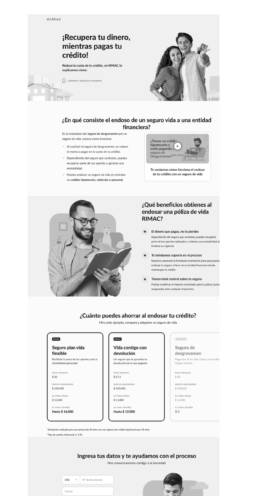
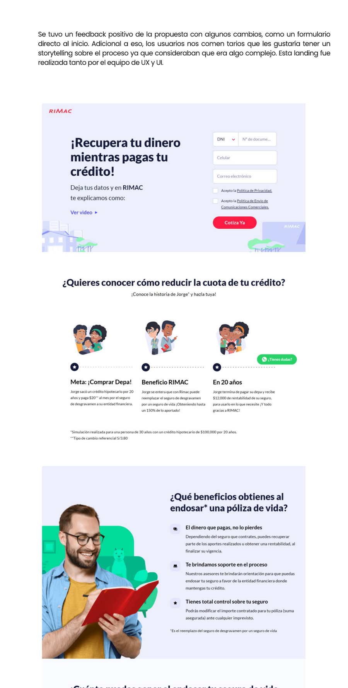

El producto digital del endosoThe digital product of the endorsement
Dentro del proyecto de endoso de Rimac, nos centramos en el producto digital: la landing. El objetivo era convertir un proceso percibido como complejo en una experiencia clara que captara y convirtiera leads.
Within Rimac's endorsement project, we focused on the digital product: the landing. The goal was to turn a process perceived as complex into a clear experience that captured and converted leads.
El enfoqueThe approach
Prototipo en baja fidelidad con el design system de RIMAC, testeado con usuarios e iterado en dos versiones.
Low-fidelity prototype with RIMAC's design system, tested with users and iterated across two versions.
01
Creación de la landingCreating the landing
Diseñé un prototipo en baja fidelidad con el design system de RIMAC y lo testeé con usuarios para mejorarlo. La primera versión explicaba en qué consiste el endoso, sus beneficios, cuánto se puede ahorrar, los planes disponibles y un formulario para iniciar el proceso.
I designed a low-fidelity prototype with RIMAC's design system and tested it with users to improve it. The first version explained what the endorsement is, its benefits, how much can be saved, the available plans, and a form to start the process.
02
Nueva versión e iteraciónNew version and iteration
El feedback fue positivo, con cambios clave: un formulario directo al inicio y un storytelling ilustrado que explicara el proceso (los usuarios lo percibían complejo). Esta segunda versión se trabajó junto al equipo de UX y UI.
Feedback was positive, with key changes: a form right at the top and illustrated storytelling explaining the process (users found it complex). This second version was built with the UX and UI team.
Comparativa de landingsLanding comparison
1ª versiónversion

Larga e informativa; el formulario aparecía más abajo en el scroll.Long and informative; the form appeared lower in the scroll.
2ª versiónversion

Formulario al inicio + storytelling ilustrado del proceso de endoso.Form at the top + illustrated storytelling of the endorsement process.